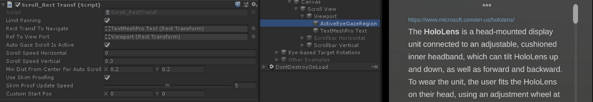
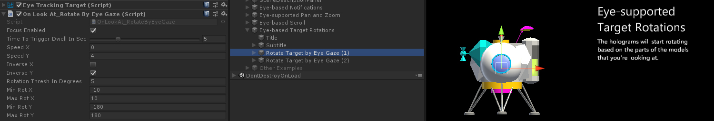

Eye-Supported Navigation in MRTK
Imagine you are reading information on a slate and when you reach the end of the displayed text, the text automatically scrolls up to reveal more content. Or you can fluently zoom in where you are looking at. The map also automatically adjusts the content to keep the things of interest within your field of view. Another interesting application is the hands-free observation of 3D holograms by automatically bringing the parts of the hologram that you are looking at to the front. These are some of the examples that are described on this page in context of eye-supported navigation.
The following descriptions assume that you are already familiar with how to set up eye tracking in your MRTK scene and with the basics of accessing eye tracking data in MRTK Unity. The examples discussed in the following are all part of the EyeTrackingDemo-03-Navigation.unity scene.
Summary: Auto scroll of text, eye-gaze-supported pan and zoom of a virtual map, hands-free gaze-directed 3D rotation.
Auto Scroll
Auto scroll enables the user to scroll through texts without lifting a finger. Simply continue reading and the text will automatically scroll up or down depending on where the user is looking. You can start off from the example provided in EyeTrackingDemo-03-Navigation.unity. This example uses a TextMesh component to allow for flexibly loading and formatting new text. To enable auto scroll, simply add the following two scripts to your collider component of the textbox:
ScrollRectTransf
To scroll through a TextMesh or more generally speaking a RectTransform component you can use the ScrollRectTransf script. If you want to scroll through a texture instead of a RectTransform, use ScrollTexture instead of ScrollRectTransf. In the following, the parameters of ScrollRectTransf that are available in the Unity Editor are explained in more detail:
| Parameters | Description |
|---|---|
| LimitPanning | If enabled, will stop the scrollable content at its boundary. |
| RectTransfToNavigate | Reference to the RectTransform to scroll in. |
| RefToViewport | Reference to the parent RectTransform of the scrollable content to determine the correct offset and boundary. |
| AutoGazeScrollIsActive | If enabled, the text will automatically scroll if the user looks at an active region (e.g., the top and bottom part of your scroll panel if the vertical scroll speed is not zero). |
| ScrollSpeed_x | If set to a value unequal to zero, horizontal scroll will be enabled. Negative values mean a change in scroll direction: Left to right vs. right to left. |
| ScrollSpeed_y | If set to a value unequal to zero, vertical scroll will be enabled. Negative values mean a change in scroll direction: Up to down vs. down to up. |
| MinDistFromCenterForAutoScroll | Normalized minimal distance in x and y from center of the target's hit box (0, 0) to scroll. Thus, values must range between 0 (always scroll) and 0.5 (no scroll). |
| UseSkimProofing | If enabled, it prevents sudden scroll movements when quickly looking around. This may make scrolling feel less responsive though. It can be tuned with the SkimProofUpdateSpeed value. |
| SkimProofUpdateSpeed | The lower the value, the slower the scrolling will speed up after skimming. Recommended value: 5. |

EyeTrackingTarget
Attaching the EyeTrackingTarget component allows for flexibly handle eye-gaze-related events.
The scroll sample demonstrates scrolling text that starts when the user looks at the panel and stops when the user is looking away from it.

Gaze-supported Pan and Zoom
Who hasn't used a virtual map before to search for their home or to explore entirely new places? Eye tracking allows you to directly dive into exactly the parts that you're interested in and once zoomed in, you can smoothly follow the course of a street to explore your neighborhood! This is not only useful for exploring geographical maps, but also to checking out details in photographs, data visualizations or even live-streamed medical imagery. To use this capability in your app is easy! For content rendered to a Texture (e.g., a photo, streamed data), simply add the PanZoomTexture script. For a RectTransform use PanZoomRectTransf. Extending the Auto Scroll capability, we essentially enable to scroll both vertically and horizontally at the same time and magnify content right around the user's current focus point.
| Parameters | Description |
|---|---|
| LimitPanning | If enabled, will stop the scrollable content at its boundary. |
| HandZoomEnabledOnStartup | Indicates whether hand gestures are automatically enabled to perform a zoom gesture. You may want to disable it at first to avoid accidentally triggering zoom actions. |
| RendererOfTextureToBeNavigated | Referenced renderer of the texture to be navigated. |
| Zoom_Acceleration | Zoom acceleration defining the steepness of logistic speed function mapping. |
| Zoom_SpeedMax | Maximum zoom speed. |
| Zoom_MinScale | Minimum scale of the texture for zoom in - e.g., 0.5f (half the original size). |
| Zoom_MaxScale | Maximum scale of the texture for zoom out - e.g., 1f (the original size) or 2.0f (double the original size). |
| Zoom_TimeInSecToZoom | Timed zoom: Once triggered, a zoom in/out will be performed for the given amount of time in seconds. |
| Zoom_Gesture | Type of hand gesture to use to zoom in/out. |
| --- | --- |
| Pan_AutoScrollIsActive | If enabled, the text will automatically scroll if the user looks at an active region (e.g., the top and bottom part of your scroll panel if the vertical scroll speed is not zero). |
| Pan_Speed_x | If set to a value unequal to zero, horizontal scroll will be enabled. Negative values mean a change in scroll direction: Left to right vs. right to left. |
| Pan_Speed_y | If set to a value unequal to zero, vertical scroll will be enabled. Negative values mean a change in scroll direction: Up to down vs. down to up. |
| Pan_MinDistFromCenter | Normalized minimal distance in x and y from center of the target's hit box (0, 0) to scroll. Thus, values must range between 0 (always scroll) and 0.5 (no scroll). |
| UseSkimProofing | If enabled, it prevents sudden scroll movements when quickly looking around. This may make scrolling feel less responsive though. It can be tuned with the SkimProofUpdateSpeed value. |
| SkimProofUpdateSpeed | The lower the value, the slower the scrolling will speed up after skimming. Recommended value: 5. |

Attention-based 3D Rotation
Imagine looking at a 3D object and the parts you want to see more closely magically turn toward you - as if the system would read your mind and know to turn the item toward you! That is the idea for attention-based 3D rotations which enable you to investigate all side of a hologram without lifting a finger. To enable this behavior, simply add the OnLookAtRotateByEyeGaze script to the part of your GameObject with a Collider component. You can tweak several parameters that are listed below to limit how fast and in which directions the hologram will turn.
As you can imagine, having this behavior active at all times may quickly become pretty distracting in a crowded scene. This is why you may want to start out with this behavior disabled and then enable it quickly using voice commands. Alternatively, we added an example in EyeTrackingDemo-03-Navigation.unity to use TargetMoveToCamera for which you can select a focused target and it flies in front of you - simply say "Come to me".
Once in the near mode, the auto rotation mode is automatically enabled. In that mode, you can observe it from all sides either simply leaning back and looking at it, walking around it or reaching out to grab and rotate it with your hand. When you dismiss the target (look & pinch or say "Send back"), it will return to its original location and will stop reacting to you from afar.
| Parameters | Description |
|---|---|
| SpeedX | Horizontal rotation speed. |
| SpeedY | Vertical rotation speed. |
| InverseX | To inverse the horizontal rotation direction. |
| InverseY | To inverse the vertical rotation direction. |
| RotationThreshInDegrees | If the angle between 'Gaze to Target' and 'Camera to Target' is less than this value, do nothing. This is to prevent small jittery rotations.. |
| MinRotX | Minimum horizontal rotation angle. This is to limit the rotation in different directions. |
| MaxRotX | Maximum horizontal rotation angle. This is to limit the rotation in different directions. |
| MinRotY | Minimal vertical rotation angle to limit the rotation around the x axis. |
| MaxRotY | Maximum vertical rotation angle to limit the rotation around the y axis. |

In summary, the above scripts should enable you to get started to use eye gaze for various input navigation tasks such as scrolling texts, zooming and panning textures as well as rotating investigating 3D holograms.